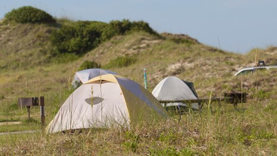

Camping in NC at Federal Facilities

An invitation
The secret is out. There are more people camping more nights at federally-owned facilities in North Carolina: the number of person-nights nearly doubled 2013-2019 at the same facilities. As seen in Figure 3.10 NC person-nights camping each night of the week - on and off season there were more people camping: year-on-year, every day of the week, in the summer and off season. The oddities of 2020 changed facility availability and campers’ behavior (temporarily we all hope).
With rising popularity, reservations for the most popular facilities and campsites are occurring earlier. Most facilities take reservations starting six months in advance–some 12 months. But don’t worry: especially for tent and RV camping, some sites are available at most facilities a week or two in advance. And some facilities have first-come, first-serve, non-reservable sites which don’t show up in this data set.
In North Carolina the median per-person cost of camping is very low: around $5 for tent and RV camping, $3 for group camping, and $20 for cabin “camping”.
So what are you waiting for? Find a federally-owned campsite at recreation.gov (or a state-owned campsite at ReserveAmerica.com) and make a reservation today.
–Daniel
I wondered …
Inspired by Tyler McIntosh’s article The Camping Crunch: Camping’s rise in popularity on America’s public lands1, I decided to use the same data set from recreation.gov2 to look at camping dynamics in North Carolina, where I live.
I wondered, in North Carolina …
- What facilities are available?
- What are the public facilities offering overnight camping, and where are they?
- What types of sites do they offer?
- How many are “big” (which I define as having at least 50 campsites)?
- What is the distribution of the number of sites per facility?
- Which government agencies provide these facilities?
- How many nights are people camping, and how has this changed over the years?
- How many nights are people camping each year, and how has this been changing over time?
- Which parks have become more popular in recent years? Have any become less popular?
- How much revenue are parks collecting related to overnight camping, and how has this been changing?
- How full are the campgrounds, and how does occupancy vary?
- How does the occupancy vary by day of week? By week of year? What changes have there been in occupancy rate over the years? Are some parks often at maximum occupancy?
- What patterns are there in reservations over time and for the various site types?
- How far in advance do people reserve?
- What does it cost per person to camp in NC?
- What does it cost to camp, and how has this changed over the years?
- How similar are the NC dynamics to the rest of the USA?
- Are the dynamics similar to the rest of the country?
Acknowledgements
Thanks to the people at recreation.gov for making this data available. Also a special thanks to the rangers and other employees in our many park systems, protecting and stewarding our natural heritage for this and future generations.
License
By Daniel Moul (heydanielmoul at gmail)
 This document is licensed under a Creative Commons Attribution 4.0 International License
This document is licensed under a Creative Commons Attribution 4.0 International License
Code is available at github.com/dmoul/nc-camping under the MIT license.
The Camping Crunch: Camping’s rise in popularity on America’s public lands was published Oct 21, 2021 on the website of the Center or Western Priorities at https://westernpriorities.org/the-camping-crunch/. I found it through a reference in Jeremy Singer-Vine’s excellent newsletter Data is Plural ↩︎
I downloaded the data set from https://ridb.recreation.gov/download on 2021-11-11, specifically: (1) overview information in RIDB Recreation Data at https://ridb.recreation.gov/downloads/RIDBFullExport_V1_JSON.zip and (2) historical data for each year FY 2006 - FY 2020 as zipped CSV files, e.g, https://ridb.recreation.gov/downloads/reservations2020.zip for 2020↩︎